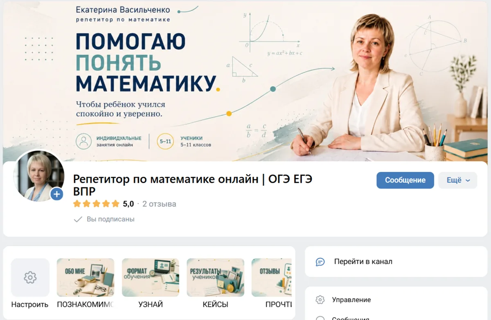
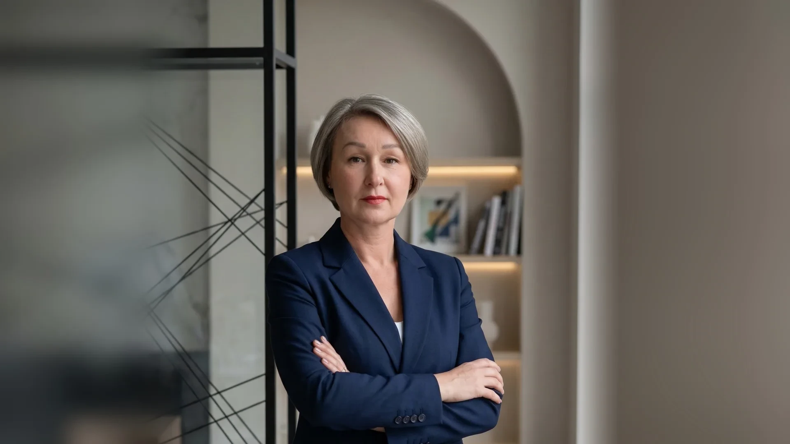
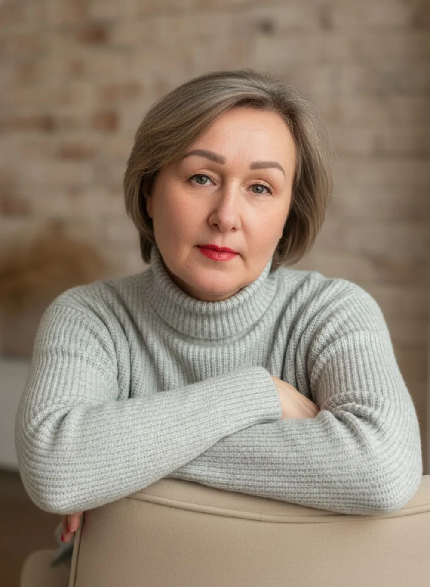
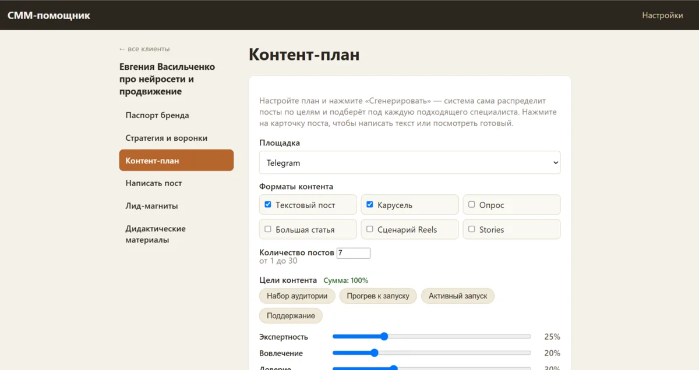
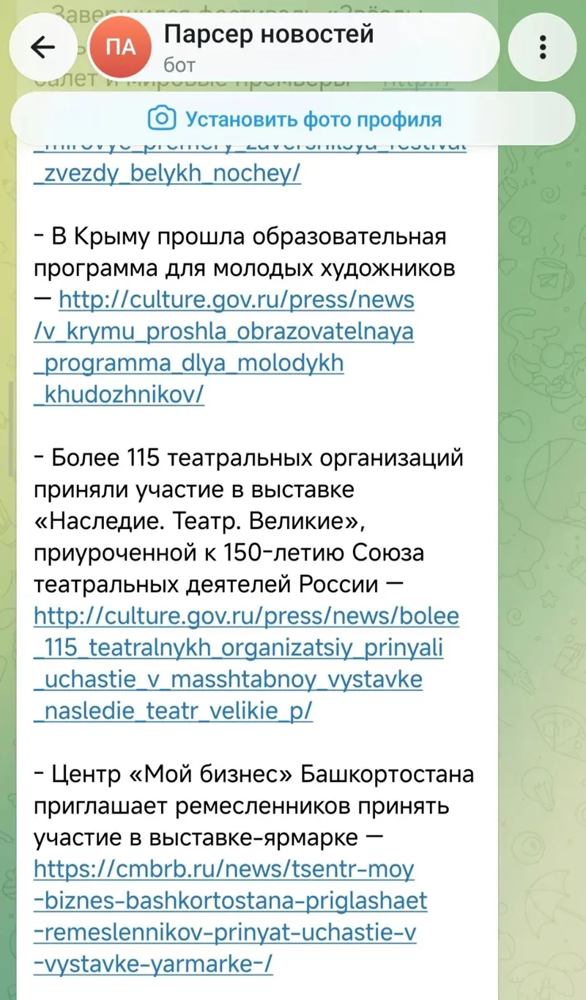

Группа репетитора
оформление и ведениеОформила с нуля и веду: стратегия и план публикаций
Группа принимает заявки на занятия
Оформление групп и ИИ-помощники
Группа ВКонтакте или в Максе с понятным оформлением и планом публикаций. Идеи для постов, черновики и подборки новостей возьмёт на себя ИИ-помощник

Услуги и цены
Сначала бесплатная консультация: разбираюсь в вашей ситуации и говорю, что подойдёт
Разбираюсь в вашей ситуации и даю рекомендации
бесплатно30 минут
Разбираюсь, для кого ваша группа, и оформляю её так, чтобы было понятно, о чём писать и как получать заявки
от 15 000 ₽до 14 дней
Собираю ИИ-помощника (его ещё называют агентом) под одну задачу: идеи для постов, черновики, подборки новостей. Могу собрать помощника и под другую повторяющуюся задачу в вашем деле
от 10 000 ₽до 14 дней
Почему я
Евгения Васильченко · оформляю группы и собираю ИИ-помощников
Я работаю с нейросетями постоянно: фото, тексты, аналитика, а сейчас — ИИ-помощники и автоматизация. По образованию я менеджер и строить систему умею. Изобретать велосипед не буду: если рутину можно передать нейросети, я так и делаю
Научила понимать, что важно покупателю: он берёт не услугу, а результат
15 лет инженером-логистом в топливно-энергетической компании: снабжала буровые бригады материалами, потом вела вахтовые перевозки. Научила выстраивать логические цепочки: начинаю от результата и иду к началу
Финансово-экономический институт, специализация «менеджмент организации»

Что уже сделано
Для клиентов, для своего блога и для себя

Оформила с нуля и веду: стратегия и план публикаций
Группа принимает заявки на занятия

В него заложены основы маркетинга: помогает строить контент-план на привлечение, прогрев или продажи
План публикаций и идеи

ИИ-помощник каждое утро присылает в Telegram-бот новости с выбранных сайтов
Свежая подборка каждое утро
Учитель-методист и ассистент-креатор готовят методический материал и карточки по темам
Материал и карточки к постам
Оформление с разбором целевой аудитории
Оформленная группа
Собрала для себя: каждый месяц разбирает банковские выписки, раскладывает доходы и расходы по категориям и подсказывает, где кешбэк выгоднее
Картина финансов целиком
Отзывы клиентов об этих работах — в моей группе ВКонтакте
Как я работаю
Всё индивидуально, но порядок один и тот же
На созвоне или в переписке вы словами рассказываете, какую задачу хотите решить и что должно получиться на выходе
Разбираю процесс и нахожу решение без лишних технических нагромождений и с минимальными затратами
Обсуждаю с вами приемлемые пути решения, объём работы, сроки, стоимость; после согласования и предоплаты 50 % приступаю к сборке
Предоставляете ваши материалы, ссылки, тексты (если нужно); срок сборки зависит от объёма и сложности
Если помощника нужно доучить на ваших материалах, срок может увеличиться, но только по согласованию с вами
Оформление группы идёт так же по шагам: разговор о задачах, разбор вашего предложения и клиентов, оформление и план публикаций — до 14 дней
Отзывы
Все отзывы опубликованы в моей группе ВКонтакте — там их может прочитать любой
«Теперь каждое утро я получаю свежие подборки новостей и событий как региона, так и России, и могу спокойно формировать свои посты, новости и дайджесты! Евгения помогла снять эту рутинную задачу, очень ответственно и тонко подошла к решению моей задачи»
«…у меня сложилось ощущение, что со мной работает профессионал: я заполняла множество опросников, по которым выявлялась целевая аудитория. Мы встречались по видеосозвону и обсуждали контент. Я чувствовала индивидуальный подход, а не работу по шаблону. На все мои вопросы и сомнения отвечала быстро»
«Огромная благодарность Евгении за проделанную работу, я очень довольна нашим результатом и буду продолжать сотрудничество. Я продвигаю своё сообщество в сфере тату… Евгения мне очень помогла с креативами и проконсультировала по грамотному ведению контента»
«Долгое время хотела создать группу для работы, но не решалась и не могла разобраться, с чего начать. Евгения помогла мне реализовать мою мечту. Грамотно сделала оформление. Всё получилось удобным и понятным… Решила доверить ведение группы профессионалу и ни разу не пожалела. Мои сухие наброски превращаются в увлекательные статьи»
Полные тексты отзывов — в моей группе ВКонтакте
Вопросы и ответы
На бесплатной консультации за 30 минут разбираюсь в вашей ситуации и говорю, что подойдёт. Передаю нейросети только то, где это правда помогает
Консультация бесплатная. Оформление группы — от 15 000 ₽, ИИ-помощник под одну задачу — от 10 000 ₽. К работе приступаю после согласования и предоплаты 50 %. Вторая половина оплачивается после приёмки работы и подписания акта приёма-передачи
До 14 дней, срок зависит от объёма и сложности. Если помощника нужно доучить на ваших материалах, срок может увеличиться, но только по согласованию с вами
Рассказать словами, какую задачу хотите решить и что должно получиться. Если понадобится — прислать материалы, ссылки, тексты
Если вы хотя бы раз писали запрос Алисе, разберётесь точно. Настраиваю всё сама. Если понадобится ваше участие в настройке, проведу по шагам. Подбираю самый удобный для вас вариант работы с помощником
Я всегда на связи и поправлю ошибку помощника, если такая случится. Кроме этого, предусмотрена техподдержка — 3000 ₽ в месяц
Всё зависит от того, где будет жить ваш помощник и какой у него «мозг». За сервер нужно будет платить, но это не более 1000 рублей в месяц. Это оплата только сервера. Если понадобится отдельно платить за саму нейросеть, я скажу об этом честно
Связаться
Удобнее в Максе или во ВКонтакте — пишите туда, где вы уже есть
Оформление групп и ИИ-помощники